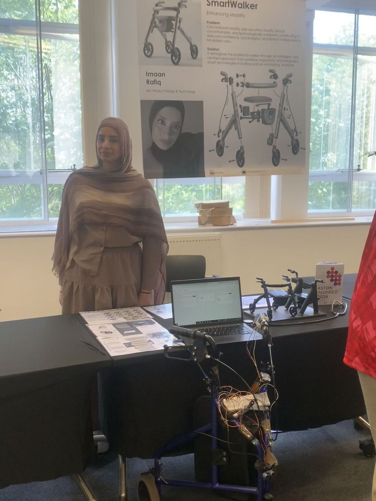
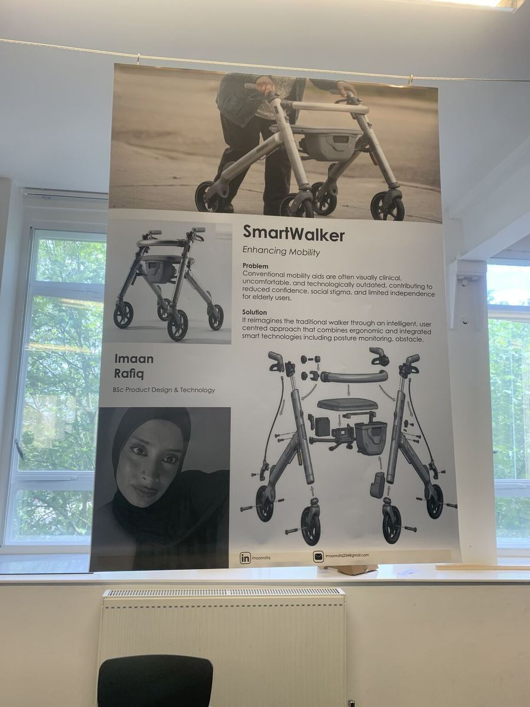
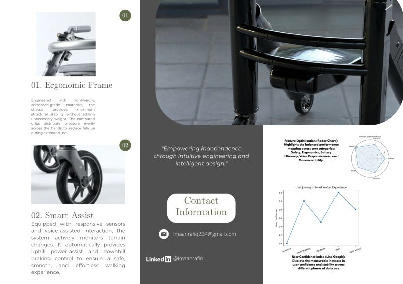
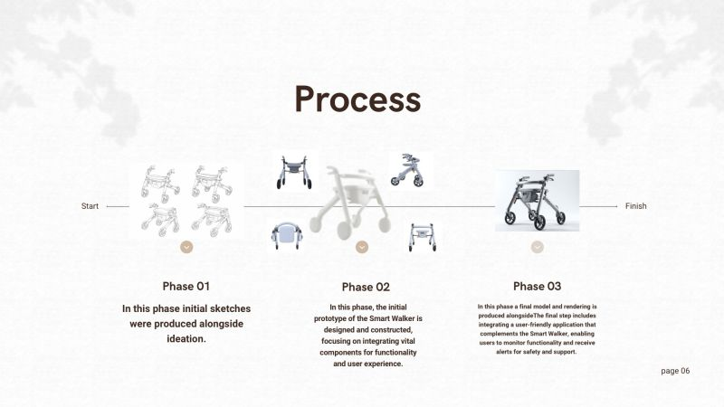

SmartWalker
Enhancing independent mobility, James Dyson Award 2026 entry

An intelligent rollator that monitors posture, detects obstacles, analyses gait and calls for help if the user falls.
Conventional mobility aids look clinical and feel out of date, which chips away at confidence and independence. The design split into two tiers so the core safety technology stays affordable, with the premium tier adding regenerative wheel assistance.
- Year
- 2025
- Discipline
- Final year project
- Role
- User research · CAD · Electronics · FEA · BOM costing
- Tools
- SOLIDWORKS · ESP32-S3 · Arduino / C++ · KeyShot








11 images · Final year project · 2025